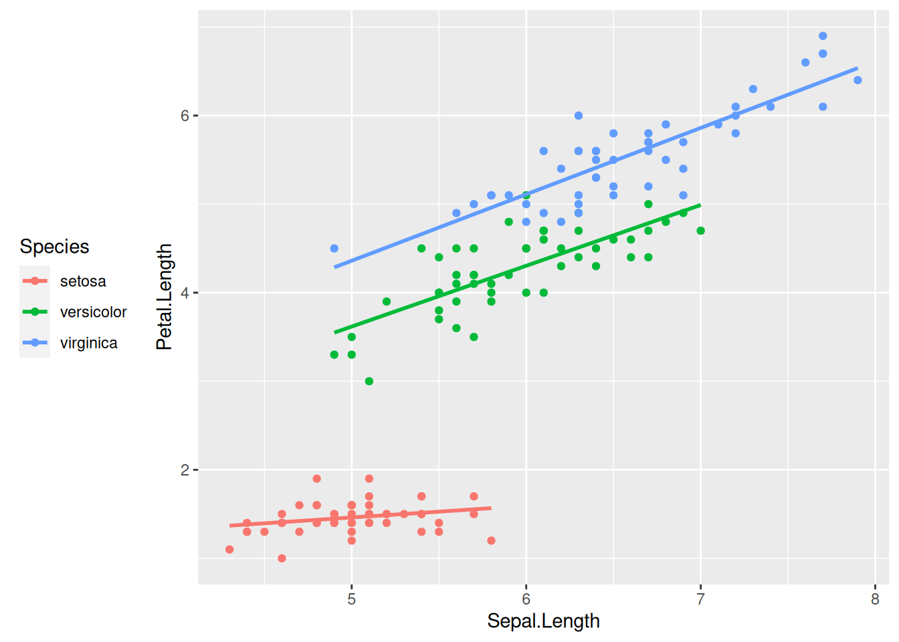
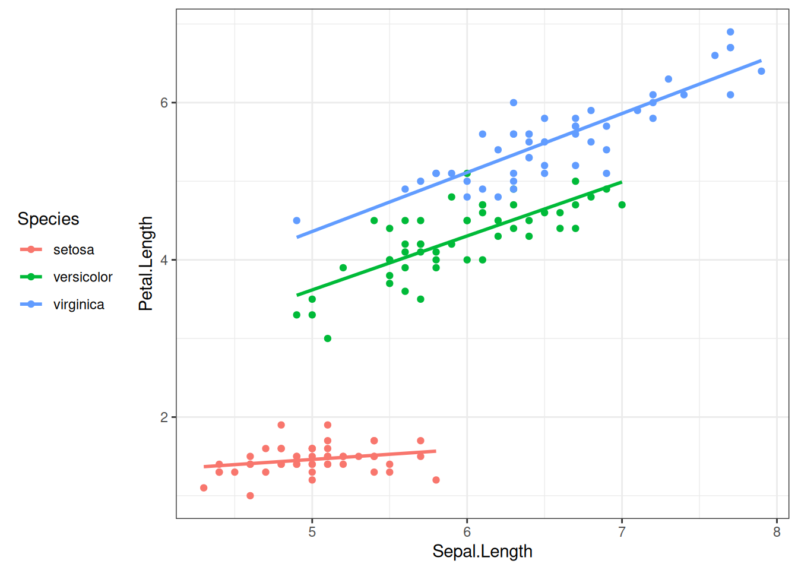
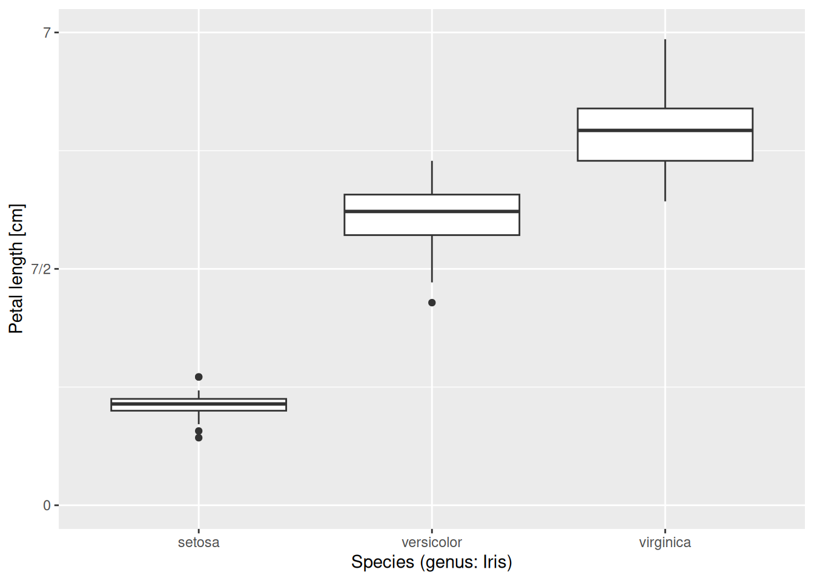
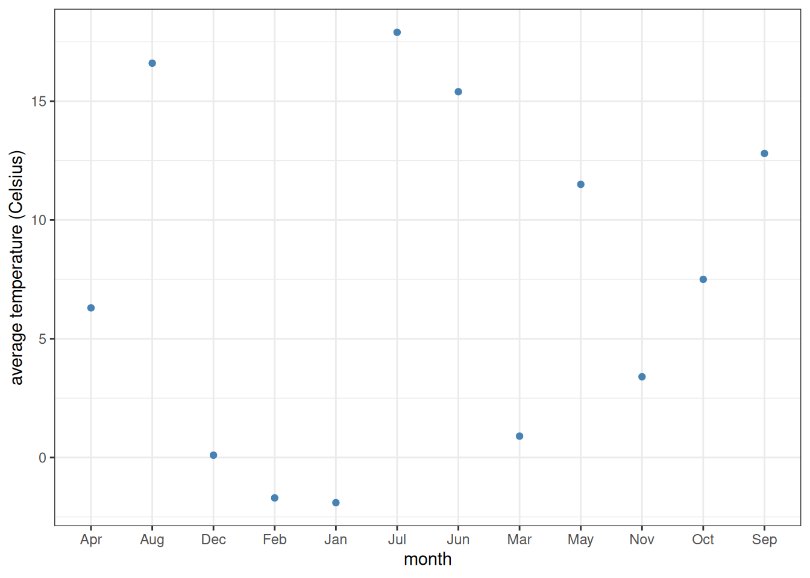
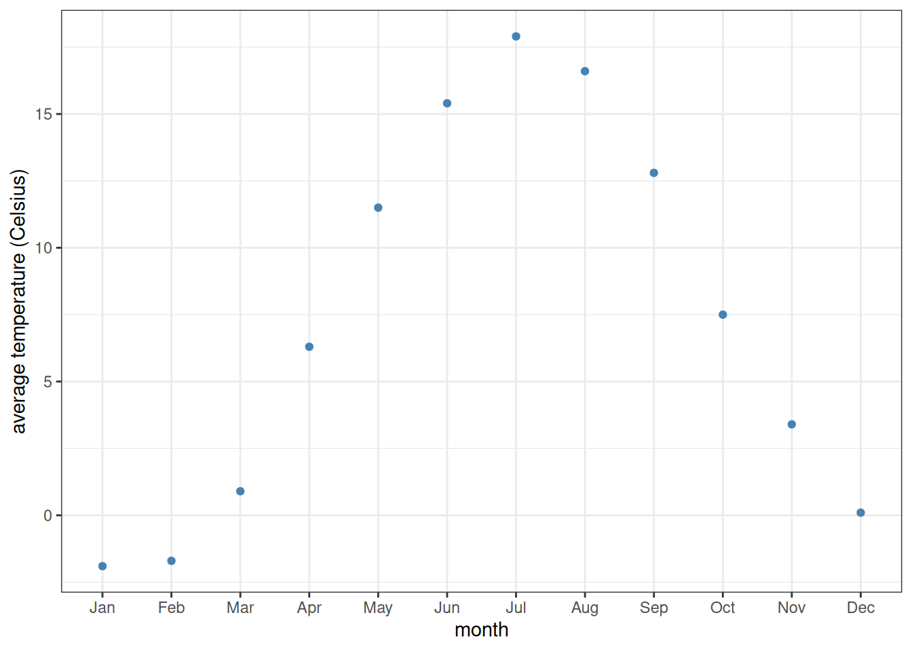

library(tidyverse)
ggplot(iris) +
aes(x = Sepal.Length, y = Petal.Length) +
geom_point() +
geom_smooth()7 Some further plotting options
7.1 Smoothing and regression lines
Last time we learned about aesthetic mappings and various geom_ options, such as geom_point, geom_histogram, and geom_boxplot. Let us explore another type of geom_, which approximates the trend of a set of data points with a line and an error bar that shows the confidence interval of the estimate at each point:
While such fits are occasionally useful, we often want a linear least-suqares regression on our data. To get such a linear fit, add the argument method = "lm" to geom_smooth() ("lm" stands for “linear model”):
ggplot(iris) +
aes(x = Sepal.Length, y = Petal.Length) +
geom_point() +
geom_smooth(method = "lm")Linear regression lines are usually shown without the confidence intervals (the gray band around the regression line). To drop this, set se = FALSE:
ggplot(iris) +
aes(x = Sepal.Length, y = Petal.Length) +
geom_point() +
geom_smooth(method = "lm", se = FALSE)What happens if we color the data points by species? Let us add colour = Species to the list of aesthetic mappings:
ggplot(iris) +
aes(x = Sepal.Length, y = Petal.Length, colour = Species) +
geom_point() +
geom_smooth(method = "lm", se = FALSE)Now the regression line is automatically fitted to the data within each of the groups separately—a highly useful behavior.
Notice also that a color legend was automatically created and put to the right of the graph. This is the default in ggplot2. You can move them to another position by specifying the legend.position option within the theme function that can be added onto the plot:
ggplot(iris) +
aes(x = Sepal.Length, y = Petal.Length, colour = Species) +
geom_point() +
geom_smooth(method = "lm", se = FALSE) +
theme(legend.position = "left") # "top", "bottom", "left", "right", or "none"
Specifying legend.position = "none" omits the legend altogether.
A word of caution: in case the legend positioning is matched with a generic theme such as theme_bw(), one should put the legend position after the main theme definition. The reason is that pre-defined themes like theme_bw() override any specific theme options you might specify. The rule of thumb is: any theme() component to your plot should be added only after the generic theme definition. Otherwise the theme() component will be overridden and will not take effect. For example, this does not work as intended:
ggplot(iris) +
aes(x = Sepal.Length, y = Petal.Length, colour = Species) +
geom_point() +
geom_smooth(method = "lm", se = FALSE) +
theme(legend.position = "left") + # Position legend at the left
theme_bw() # This defines the general theme - and thus overrides the line above...But this one does:
ggplot(iris) +
aes(x = Sepal.Length, y = Petal.Length, colour = Species) +
geom_point() +
geom_smooth(method = "lm", se = FALSE) +
theme_bw() + # This defines the general theme
theme(legend.position = "left") # We now override the default legend positioning
7.2 Scales
The aesthetic mappings of a graph (x-axis, y-axis, color, fill, size, shape, alpha, …) are automatically rendered into the displayed plot, based on certain default settings within ggplot2. These defaults can be altered, however. Consider the following bare-bones plot:
iris %>%
ggplot() +
aes(x = Species, y = Petal.Length) +
geom_boxplot()
We can now change, for example, how the y-axis is displayed. The component to be added to the plot is scale_y_continuous(). Here scale means we are going to change the scaling of some aesthetic mapping, y refers to the y-axis (as expected, it can be replaced with x, colour, fill, etc.), and continuous means that the scaling of the axis is not via discrete values (e.g., either 1 or 2 or 3 but nothing in between), but continuous (every real number is permissible along the y-axis). The plot component scale_y_continuous() takes several arguments; take a look look at its help page to see all possible options. Here we mention a few of these. First, there is the name option, which is used to relabel the axis. The limits argument receives a vector of two values, containing the lower and upper limits of the plot. If any of them is set to NA, the corresponding limit will be determined automatically. Next, the breaks argument controls where the tick marks along the axis go. It is given as a vector, with its entries corresponding to the y-coordinates of the tick marks. Finally, labels determines what actually gets written on the axis at the tick mark points—it is therefore also a vector, its length matching that of breaks.
As an example, let us scale the y-axis of the previous graph in the following way. The axis label should read “Petal length [cm]”, instead of the current “Petal.Length”. It should go from 0 to 7, with a break at those two values and also halfway in between at 3.5. Here is how to do this:
iris %>%
ggplot() +
aes(x = Species, y = Petal.Length) +
geom_boxplot() +
scale_y_continuous(name = "Petal length [cm]",
limits = c(0, 7),
breaks = c(0, 3.5, 7))What should we do if, for some reason, we would additionally like the “3.5” in the middle to be displayed as “7/2” instead (an exact value)? In that case, we can add an appropriate labels option as an argument to scale_y_continuous:
iris %>%
ggplot() +
aes(x = Species, y = Petal.Length) +
geom_boxplot() +
scale_y_continuous(name = "Petal length [cm]",
limits = c(0, 7),
breaks = c(0, 3.5, 7),
labels = c("0", "7/2", "7"))The x-axis can be scaled similarly. One important difference though is that here, the x-axis has a discrete scale. Since we are displaying the species along it, any value must be either setosa or versicolor or virginica; it makes no sense to talk about what is “halfway in between setosa and versicolor”. Therefore, one should use scale_x_discrete(). Its options are similar to those of scale_x_continuous(). For instance, let us override the axis label, spelling out that the three species belong to the genus Iris:
iris %>%
ggplot() +
aes(x = Species, y = Petal.Length) +
geom_boxplot() +
scale_y_continuous(name = "Petal length [cm]",
limits = c(0, 7),
breaks = c(0, 3.5, 7),
labels = c("0", "7/2", "7")) +
scale_x_discrete(name = "Species (genus: Iris)")
Alternatively, one could also redefine the labels and get an equally good graph:
iris %>%
ggplot() +
aes(x = Species, y = Petal.Length) +
geom_boxplot() +
scale_y_continuous(name = "Petal length [cm]",
limits = c(0, 7),
breaks = c(0, 3.5, 7),
labels = c("0", "7/2", "7")) +
scale_x_discrete(labels = c("Iris setosa", "Iris versicolor", "Iris virginica"))
Note
In case you would like to display the species names in italics, as is standard requirement when writing binomial nomenclature, feel free to add theme(axis.text.x = element_text(face = "italic")) to the end of the plot. We will not be going into more detail on tweaking themes, but feel free to explore the possibilities by looking at the help pages or Googling them.
Other aesthetic mappings can also be adjusted, such as colour, fill, size, or alpha. One useful way to do it is through scale_colour_manual(), scale_fill_manual(), and so on. These are like scale_colour_discrete(), scale_fill_discrete() etc., except that they allow one to specify a discrete set of values by hand. Let us do this for color and fill:
iris %>%
ggplot() +
aes(x = Species, y = Petal.Length, colour = Species, fill = Species) +
geom_boxplot(alpha = 0.2) +
scale_y_continuous(name = "Petal length [cm]",
limits = c(0, 7),
breaks = c(0, 3.5, 7),
labels = c("0", "7/2", "7")) +
scale_x_discrete(labels = c("Iris setosa", "Iris versicolor", "Iris virginica")) +
scale_colour_manual(values = c("steelblue", "goldenrod", "forestgreen")) +
scale_fill_manual(values = c("steelblue", "goldenrod", "forestgreen"))We used the built-in color names "steelblue", "goldenrod", and "forestgreen" above. A full R color cheat sheet can be found here, for more options and built-in colors.
7.3 Facets
Plots can be faceted (subplots created and arranged in a grid layout) based on some variable or variables. For instance, let us create histograms of petal lengths in the iris dataset, like we did last time:
iris %>%
ggplot() +
aes(x = Petal.Length) +
geom_histogram()
This way, one cannot see which part of the histogram belongs to which species. One fix to this is to color the histogram by species—this is what we have done before. Another is to separate the plot into three facets, each displaying data for one of the species only:
iris %>%
ggplot() +
aes(x = Petal.Length) +
geom_histogram() +
facet_grid(. ~ Species)
The component facet_grid(x ~ y) means that the data will be grouped based on columns x and y, with the distinct values of column x making up the rows and those of column y the columns of the grid of plots. If one of them is replaced with a dot (as above), then that variable is ignored, and only the other variable is used in creating a row (or column) of subplots. So, to display the same data but with the facets arranged in one column instead of one row, we simply replace facet_grid(. ~ Species) with facet_grid(Species ~ .):
iris %>%
ggplot() +
aes(x = Petal.Length) +
geom_histogram() +
facet_grid(Species ~ .)
In this particular case, the above graph is preferable to the previous one, because the three subplots now share the same x-axis. This makes it easier to compare the distribution of petal lengths across the species.
To illustrate how to make a two-dimensional grid of facets, let us normalize the iris dataset using pivot_longer():
as_tibble(iris) %>%
pivot_longer(cols = c(Sepal.Length, Sepal.Width, Petal.Length, Petal.Width),
names_to = "Trait",
values_to = "Measurement")# A tibble: 600 × 3
Species Trait Measurement
<fct> <chr> <dbl>
1 setosa Sepal.Length 5.1
2 setosa Sepal.Width 3.5
3 setosa Petal.Length 1.4
4 setosa Petal.Width 0.2
5 setosa Sepal.Length 4.9
6 setosa Sepal.Width 3
7 setosa Petal.Length 1.4
8 setosa Petal.Width 0.2
9 setosa Sepal.Length 4.7
10 setosa Sepal.Width 3.2
# … with 590 more rowsAs seen, now the Measurement in every row is characterized by two other variables: Species and Trait (i.e., whether the given value refers to the sepal length, petal width etc. of the given species). We can create a histogram of each measured trait for each species now, in a remarkably simple way:
as_tibble(iris) %>%
pivot_longer(cols = c(Sepal.Length, Sepal.Width, Petal.Length, Petal.Width),
names_to = "Trait",
values_to = "Measurement") %>%
ggplot() +
aes(x = Measurement) +
geom_histogram() +
facet_grid(Species ~ Trait)
7.4 Saving plots
To save the most recently created ggplot figure, simply type
ggsave(filename = "graph.pdf", width = 4, height = 3)Here filename is the name (with path and extension) of the file you want to save the figure into. The extension is important: by having specified .pdf, the system automatically saves the figure in PDF format. To use, say, PNG instead:
ggsave(filename = "graph.png", width = 4, height = 3)Since PDF is a vectorized file format (i.e., the file contains the instructions for generating the plot elements instead of a pixel representation), it is arbitrarily scalable, and is therefore the preferred way of saving and handling scientific graphs.
The width and height parameters specify, in inches, the dimensions of the saved plot. Note that this also scales some other plot elements, such as the size of the axis labels and plot legends. This means you can play with the width and height parameters to save the figure at a size where the labels are clearly visible without being too large.
In case you would like to save a figure that is not the last one that was generated, you can specify the plot argument to ggsave(). to do so, first you should assign a plot to a variable. For example:
p <- ggplot(iris) + # Assign the ggplot object to the variable p
aes(x = Petal.Length) +
geom_histogram()and then
ggsave(filename = "graph.pdf", plot = p, width = 4, height = 3)